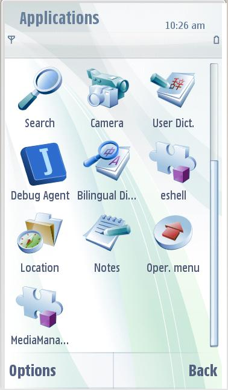
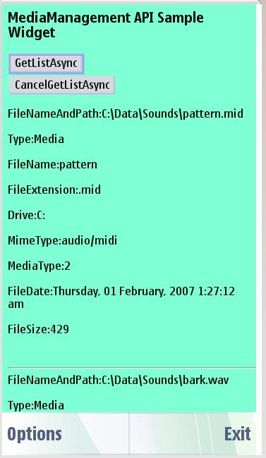

Media Management Service API - Example Widget Documentation
This document describes the Media Management Widget application for S60 5th Edition SDK. Read this document if you are a web developer, testing professional, or the product manager working on this product.
Widgets are lightweight Web applications developed using the same well-known standards-based Web technologies – AJAX, CSS, HTML and JavaScript – used to create Web pages. Developers can use it as a reference and testers can use it to test the relevant functionality. widget is intended for S60 5th Edition SDK. Developers should be able to develop professional applications.
Example Widget Application is designed to run on S60 SDK. It will be designed such that a developer takes it as a reference to create useful applications for any functionality supported on SDK. It will be designed to let the testers to test the functionality
Example widget is not intended to give full featured implementation. This example implements the Media Managemnet service API. It retrieves the list of media files from the S60 gallery depending on the file type like sound, images, videos, music and streaming url. This widget specifically retrieves only the sound files. Hence , the precondition is that there are some sound files available in the sound folder of the S60 gallery. The list of media files are listed using the IDataSource.GetList() method. This widget also implements the functionality of cancelling the asynchronous request using the IDataSource.Cancel() method.
This widget demonstrates the use of Media Management Service API. Please see the attcahed specification MediaManagement Service API for web run time
The Web Runtime (WRT) environment supports the following Internet technology standards:
HTML 4.01
The basic HTML standards are supported.
XHTML 1.0
The basic XHTML standards are supported.
CSS Level 2 revision 1 (CSS 2.1)
JavaScript 1.5 (ECMA-262 3rd Edition)
The standard JavaScript features are supported. The WRT environment also provides some additional features that are mobile device specific.
The following additional JavaScript features are supported in the WRT environment:
The example widget retrieves the media files from the S60 gallery. A service object is first created of type Mediamanagement with the following syntax
so = device.getServiceObject(“Service.MediaManagement”, “IDataSource”);
This service object is then used to call the the method getList() , a asynchronous method which returns list of media objects and meta-data from the S60 Media Gallery.
syntax looks like
result = so.IDataSource.GetList( criteria, callback);
where criteria is an object that specifies “what” media information should be returned and “how” the returned list should be filtered and sorted. The criteria object has three properties Type, Filter, and Sort.
The callback argument is the name of a function to be executed when GetList() has results or status information to return. Define a callback function for any asynchronous call with the method signature below
callback(transID, eventCode, result)
the result is parsed and displayed as a list of media files with their properties like file type, size, date, name and path , author, composer, mimetype etc.
The asynchronous call can also be cancelled by the method call IDataSource.cancel().If a cancel is sent, but the asynchronous request has already completed, then result.ErrorCode will be SErrNotFound.
Use Cases


Example Widget Application does not support internationalization